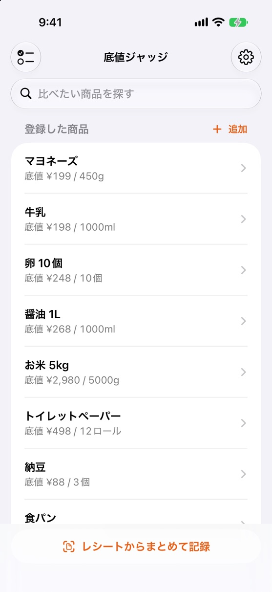
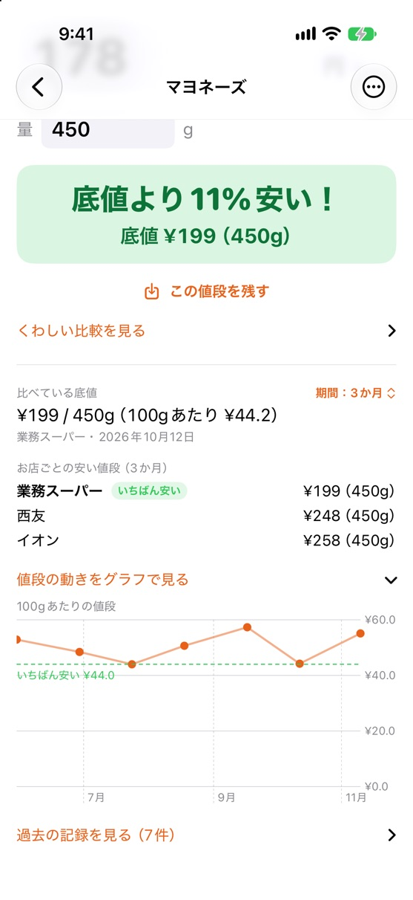
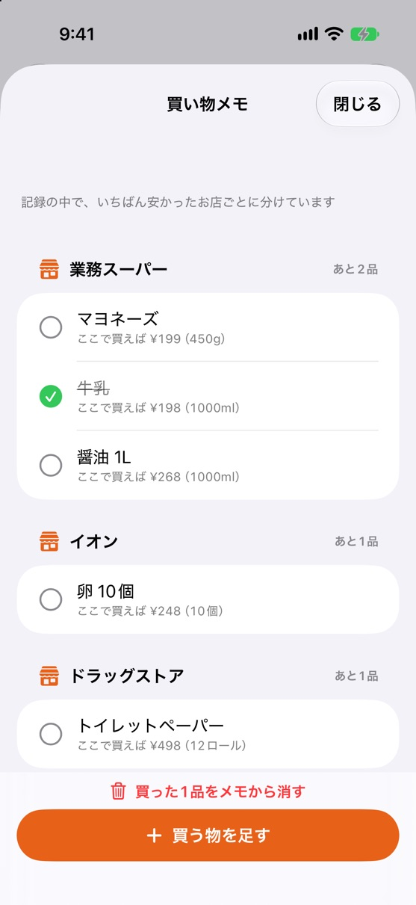

FEATURES
できること
レシートでまとめて記録
撮るだけで品名・値段・量・お店・日付を読み取り。外税は税込に直します。読み取りはiPhoneの中だけ。
売り場で判定
値札の値段を打つだけで「底値より◯%安い／高い」。量が違っても単価で比べます。
どのお店が安いか
お店ごとのいちばん安い値段を、安い順に並べます。
グラフ・ウィジェット・メモ（プラス）
値段の動きのグラフ、ホーム画面の底値、家族や友人との記録の受け渡し、お店ごとの買い物メモ。
SCREENS
画面



PRICE
値段
無料
¥0
- 記録・売り場の判定
- レシートの読み取り
- お店ごとの安い値段
プラス
¥700（買い切り）
- 広告が消える
- 値段のグラフ・ウィジェット
- 記録の受け渡し・買い物メモ
2026年12月13日までに入れた方へ
2026年12月13日までにこのアプリを入れた方は、買わなくてもずっと全部無料で使えます（広告も出ません）。
2026年12月13日までにこのアプリを入れた方は、買わなくてもずっと全部無料で使えます（広告も出ません）。
FAQ
よくある質問
底値（そこね）とは何ですか？
最近いちばん安く買えた値段のことです。このアプリでは、あなたが記録した値段のうち、選んだ期間（最初は3か月）でいちばん安い値段と比べます。期間は設定で1か月〜ずっとから選べます。
レシートの写真はどこかに送られますか？
送りません。文字の読み取りはiPhoneの中（Apple の Vision）だけで行い、写真も保存しません。
お店でレシートの書き方が違っても、同じ商品になりますか？
読み（「ｷﾞｭｳﾆｭｳ」と「牛乳」など）や量の表記を見て、同じ商品につなぎます。自信がない時は「同じ商品ですか？」と聞きます。間違えてつないだ時は、記録の「…」から別の商品に移せます。
機種変更の時はどうすればいいですか？
プラスの「記録を渡す・もらう」で記録をファイルにして「ファイルに保存」しておき、新しいiPhoneで「自分の記録として読み込む」を選んでください。
SUPPORT
サポート
不具合・ご要望・ご質問は、メールでお知らせください。
お使いのiPhoneの機種・iOSのバージョン・アプリのバージョン（アプリの設定の一番下）を書いていただけると、早く調べられます。